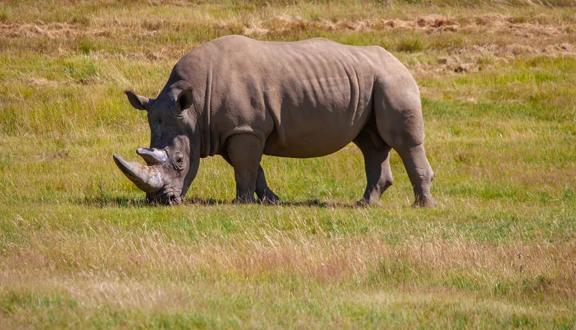
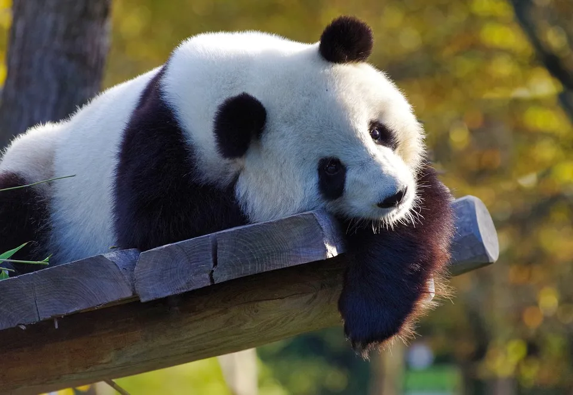

Southern White Rhinoceros
Not to be confused with the Northern White Rhino, of which there are only 2 females left, the Southern White Rhino is the second largest land mammal on earth. Living for the most part in South Africa, Namibia, Zimbabwe and Kenya, these beautiful beasts were thought to be extinct in the late 19th century. But in 1895, a tiny population of less than 100 rhinos was discovered in South Africa.
Giant Panda
A common symbol of conservation for over 50 years (and the inspiration behind the WWF logo, no less), in 2016 the Giant Panda was officially downgraded from ‘endangered’ to ‘vulnerable’. Forest protection and reforestation measures in China are the reasons behind this positive change, resulting in over 2,000 Giant Pandas now living wild in protected reserves across China
